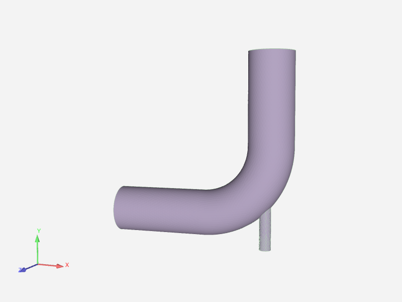
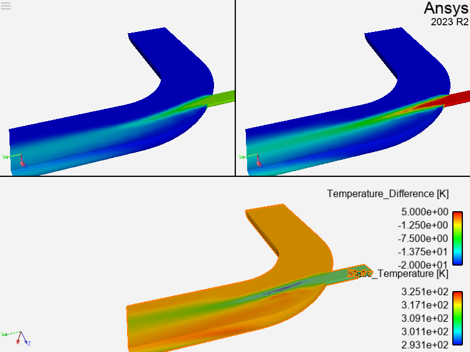

Note
Go to the end to download the full example code
Design Point Comparison#
A common operation is to load two different datasets, usually design points, into the same EnSight session using separate cases. In this example, two Fluent design points are loaded and displayed in different viewports. The difference between the temperature fields is computed and displayed in a third viewport.
Start an EnSight session#
Start by launching and connecting to an instance of EnSight. In this case, we use a local installation of EnSight.
from ansys.pyensight import LocalLauncher
session = LocalLauncher().start()
Load the data#
Here we use a remote session to load the two datasets into different cases. Note the names of the parts that are loaded, but the parts are displayed over the top of each other. This step can take a minute or more to download the data.
session.load_example("elbow_dp0_dp1.ens")
session.show("image", width=800, height=600)
print([p.PATHNAME for p in session.ensight.objs.core.PARTS])
Create a trio of viewports#

We will construct a pair of viewports at the top for case 0 and case 1. A third viewport, filling the lower half of the window is created for the display of the difference field.
# Create two more viewports (there is always one viewport)
session.ensight.objs.core.DEFAULTVPORT[0].createviewport()
session.ensight.objs.core.DEFAULTVPORT[0].createviewport()
# Make these viewports visible and grab references to the viewport objects.
session.ensight.objs.core.VPORTS.set_attr(session.ensight.objs.enums.VISIBLE, True)
vp0 = session.ensight.objs.core.VPORTS[0]
vp1 = session.ensight.objs.core.VPORTS[1]
vp2 = session.ensight.objs.core.VPORTS[2]
# Position the viewports by setting their WIDTH, HEIGHT, ORIGINX and ORIGINY attributes.
vp0.WIDTH = 0.5
vp1.WIDTH = 0.5
vp2.WIDTH = 1.0
session.ensight.objs.core.VPORTS.set_attr(session.ensight.objs.enums.HEIGHT, 0.5)
vp0.ORIGINX = 0.0
vp0.ORIGINY = 0.5
vp0.BORDERVISIBLE = True
vp1.ORIGINX = 0.5
vp1.ORIGINY = 0.5
vp2.ORIGINX = 0.0
vp2.ORIGINY = 0.0
# Link the transforms of all the viewports to each other
session.ensight.objs.core.VPORTS.set_attr(session.ensight.objs.enums.LINKED, True)
# Hide all but the "fluid" parts
session.ensight.objs.core.PARTS.set_attr(session.ensight.objs.enums.VISIBLE, False)
session.ensight.objs.core.PARTS["fluid"].set_attr(session.ensight.objs.enums.VISIBLE, True)
session.ensight.objs.core.PARTS["fluid"].set_attr(
session.ensight.objs.enums.ELTREPRESENTATION, session.ensight.objs.enums.BORD_FULL
)
session.show("image", width=800, height=600)
Color and assign parts to specific viewports#

We color the “fluid” parts using the “Static_Temperature” variable and assign specific parts to specific viewports.
Loading the datasets created fluid parts for both of the loaded cases. We need another part to display the temperature difference variable in the lower pane. For this purpose, we use the “LPART” (part loader part) to create a second instance of the first case “fluid” part. We will compute the difference field on this part to make it easier to display all three at the same time.
fluid0 = session.ensight.objs.core.PARTS["fluid"][0]
fluid1 = session.ensight.objs.core.PARTS["fluid"][1]
# Using an LPART: we find the ENS_LPART instance in the first case
# for the part named "fluid". If we load() this object, we get a
# new instance of the case 0 "fluid" mesh.
fluid0_diff = session.ensight.objs.core.CASES[0].LPARTS.find("fluid")[0].load()
fluid0_diff.ELTREPRESENTATION = session.ensight.objs.enums.BORD_FULL
# Get the temperature variable and color the fluid parts by it.
temperature = session.ensight.objs.core.VARIABLES["Static_Temperature"][0]
fluid0_diff.COLORBYPALETTE = temperature
fluid0.COLORBYPALETTE = temperature
fluid1.COLORBYPALETTE = temperature
# Each of the three parts should only be visible in one viewport.
fluid0.VIEWPORTVIS = session.ensight.objs.enums.VIEWPORT00
fluid1.VIEWPORTVIS = session.ensight.objs.enums.VIEWPORT01
fluid0_diff.VIEWPORTVIS = session.ensight.objs.enums.VIEWPORT02
session.show("image", width=800, height=600)
Compute the difference field#

Use the “CaseMapDiff” calculator function to compute the different between the “Static_Temperature” fields between the two design points. This defines a new field “Temperature_Difference” on the “fluid0_diff” part. Color that part by the resulting variable.
temperature_diff = session.ensight.objs.core.create_variable(
"Temperature_Difference",
value="CaseMapDiff(plist, 2, Static_Temperature, 0, 1)",
sources=[fluid0_diff],
)
fluid0_diff.COLORBYPALETTE = temperature_diff
session.show("image", width=800, height=600)
Adjust palette range#
To make the visualization a bit easier to interpret, adjust the palette limits to the nearest factor of five. Further adjustments to rotation, palette location, etc can be made to improve visual appeal of the imagery.
limits = [(round(v / 5.0) * 5) for v in temperature_diff.MINMAX]
temperature_diff.PALETTE[0].MINMAX = limits
remote = session.show("remote")
Close the session#
Close the connection and shut down the EnSight instance
session.close()
Total running time of the script: ( 0 minutes 0.000 seconds)